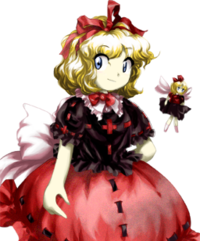

- Welcome to Touhou Wiki!
- Please register to edit. For assistance, check in with our Discord server or IRC channel.
Medicine Melancholy
| メディスン・メランコリー Medicine Melancholy me̞disɯ̃ᵝm me̞ɾ̠ã̠ŋko̞ɾiː (♫) Medicin Melancory | |
|---|---|
|
 Medicine Melancholy in Phantasmagoria of Flower View Little Sweet PoisonMore Character Titles | |
| Species | |
| Abilities |
Manipulation of poison |
| Age |
Immortal[1] |
| Location | |
Music Themes | |
| |
Appearances | |
| Official Games | |
| |
| Print Works | |
| |
Medicine Melancholy (メディスン・メランコリー Medisun Merankorī) is a young doll youkai that lives on Nameless Hill surrounded by poisonous lily-of-the-valley flowers.
General Informaion[edit]
Medicine first appearance in Phantasmagoria of Flower View as a possible opponent. She was then later shown as a target on Stage 4 of Shoot the Bullet and in the background of Hopeless Masquerade. She is a doll who became youkai after being left in the lily-of-the-valley field on the Nameless Hill.
Because some of her attacks create clouds of poison in the player's side of the field which slow the player's movements and make dodging difficult she can be a very troublesome opponent for those that don't take care while near poison. Though supposedly not especially powerful or experienced among youkai, the fact that the right poison can affect even very strong people or large numbers of people at once makes her someone best avoided.
Species[edit]
Since a few hundred years has still not passed from the time she became youkai, she is a novice youkai. Dolls are usually manipulated by humans. Because of this, she wishes for doll emancipation, but there aren't many dolls who agree with her since dolls can't move to begin with. She was a large doll used in ventriloquism. Even after becoming a youkai, her body is still that of a doll and her experience and knowledge is overwhelmingly shallow. Although she is labeled as a youkai, Medicine's true nature may be that of a tsukumogami, as described in the Perfect Memento in Strict Sense article about the Eight Million Gods.
Ability[edit]
- Manipulating poison
Medicine is able to manipulate poison, where she can uses the poison on everything; food, attacking and even herself could be covered with poison. It seems to be not merely the poison of lily-of-the-valley, but of all kinds. For example, the poison of wasps, snakes, spiders, alcohol, nicotine, etc. It has the effect such that even touching her will cause inflammation; there's currectly no definite treatment method. Even strong youkai could be at risk from her poison, and it may cause after effects too. However, since she's in the early childhood of not having lived around the range of several hundred years, she is not able to skilfully control her own power, and does not know how to go easy. Even when the opponent is human, she puts forth all her power.
Incidentally, since she is not a living thing, the poison has no effect on her at all. Since all poison are raw materials for drugs, she would have good compatibility with the drug maker Eirin Yagokoro. The ingredients of seeds that can be taken from plants can cause animals to go insane. She learned that from experience, and she established a way to freely manipulate humans with poison.
Background Information[edit]
Origin[edit]
She may have been inspired by Agatha Christie, whose favourite flower was non other than the lily-of-the-valley. This is backed up by ZUN's obvious love for Agatha Christie's stories as seen in other characters like Alice Margatroid, Letty Whiterock, and above all Flandre Scarlet. Also, she may have been inspired by Nathaniel Hawthorne's short story, Rappaccini's Daughter, where the title character, Dr. Rappaccini, keeps his daughter, Beatrice, confined in a garden of poisonous flowers, until she became poisonous herself.
Name[edit]
Her full name is Medicine Melancholy (メディスン・メランコリー), which may have derived from A Medicine For Melancholy by Ray Bradbury. Also, "medicine" can mean a "drug", and a drug can be "poison" – thus, a natural medicine can be poisonous if it were corrupted for harming purposes. "Melancholy" means to have great sadness or depression, and in archaic terms it means "black bile", or "Melancholia.
Design[edit]
Medicine has silver-blue coloured eyes and blonde curly hair. She wears a dark red-purple shirt with red seams, a red skirt with red-purple seams, shoes in the same color and a pink bow at her back. She has a red ribbon in her hair.
She is accompanied by a tiny doll that is similar to her appearance.
Story[edit]
Games[edit]
- Phantasmagoria of Flower View
- Main article: Phantasmagoria of Flower View Story
Medicine attacks the player with lily-of-the-valley's poison for no apparent reason other than because they happened to be in her field. Eventually they all get overwhelmed by the poison and leave after the fight. She eventually leaves the field and encounters Eiki Shiki, Yamaxanadu, where she decides she will go against the humans and the status of dolls rise. Though, Eiki states that she is selfish and should understand the pain of others as well. So she gets judged by Eiki at that moment.
Spin-offs[edit]
- Shoot the Bullet
In Shoot the Bullet, Aya Shameimaru encountered Medicine on stage 4 and took photos of her danmaku.
- Hopeless Masquerade
Medicine made a background cameo appearance in Hopeless Masquerade on the Hall of Dreams' Great Mausoleum stage. She is seen sitting high on the mausoleum whilst cheering something.
Relationships[edit]
Human[edit]
She despises all humans that she encounters. Though, she doesn't actually know how to deal with humans. In Perfect Memento in Strict Sense, her human friendship level is listed as "poor" while her danger level is listed as "high".[2]
Minor Relationships[edit]
- Alice Margatroid
Medicine was seen chatting with Alice Margatroid on chapter 9 of Silent Sinner in Blue, although anything else other than this is unknown.
Gallery[edit]
Medicine artwork from Phantasmagoria of Flower View
Alternate outfit from Phantasmagoria of Flower View
Medicine's sigil in The Grimoire of Marisa.
Skills[edit]
Spell Cards[edit]
| Name | Translated | Comments | Games | Stage | ||
|---|---|---|---|---|---|---|
| Total: 5 | ||||||
| 毒符「神経の毒」 | Poison Sign "Nerve Poison" | PoFV | Use | |||
| 毒符「憂鬱の毒」 | Poison Sign "A Poison for Melancholy" | PoFV | Use | |||
| 霧符「ガシングガーデン」 | Fog Sign "Gassing Garden" | StB | St. 4 | |||
| 毒符「ポイズンブレス」 | Poison Sign "Poison Breath" | StB GoM |
St. 4 — | |||
| 譫妄「イントゥデリリウム」 | Confusion "Into Delirium" | StB GoM |
St. 4 — | |||
Additional Information[edit]
- Medicine Melancholy once made an attempt to spread poison across the Human Village.
- She bears a striking resemblance to Ayana, the 5th stage midboss of Mystic Square.
Fandom[edit]
Official Profiles[edit]
| ○小さなスイートポイズン メディスン・メランコリー 種族：人形 鈴蘭畑に捨てられた人形が、長い年月を経て妖怪化した物。 植物から取れるある種の成分は動物を狂わせる。彼女はその事を経 また、自分は生物じゃないので一切毒は効かない。 人形は普段は人間に操られている。その為、彼女は人形解放を強く まだ咲くはずのない鈴蘭が、今年は一斉に咲き始めている。それど |
Little Sweet Poison
Species: Doll A doll thrown away into a lily-of-the-valley field; over the long years she became a youkai. Certain kinds of ingredients, taken from a plant, can drive animals mad. She learned that through experience, and established a method of manipulating humans as she pleases. In addition, as she is not a living being, poison is harmless against her. Dolls are usually manipulated by humans. Because of this, she wishes for doll emancipation, but there aren't many dolls who agree with her. To begin with, other dolls don't move on their own... The suzuran, which weren't expected to bloom, have begun blooming all at once this year. In addition to that, even autumn flowers which weren't supposed to bloom are blooming too. She learned that there are many powers she has never seen in Gensokyo. |
Official Sources[edit]
- 2005/08/14 Phantasmagoria of Flower View - Medicine Story dialogue; キャラ設定.txt (official profile)
- 2005/12/30 Shoot the Bullet - Stage 4 Spell Card comments
- 2006/12/27 Perfect Memento in Strict Sense - Medicine Melancholy
- 2008/02/09 Silent Sinner in Blue - Chapter 9
- 2009/07/28 The Grimoire of Marisa - Medicine Melancholy's Spell Cards
References[edit]
| This page is part of Project Characters, a Touhou Wiki project that aims to write proper descriptions for all official characters of Touhou Project. Please keep the character page guidelines in mind when contributing. |
}}